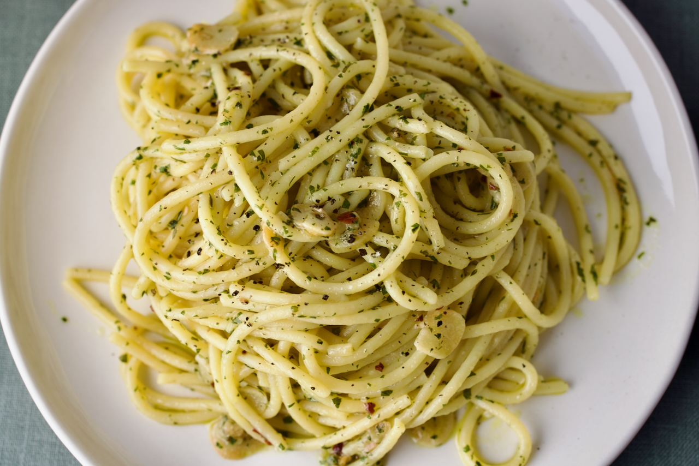

Aglio E Olio
Home

Description
"Aglio e olio" is a classic Italian pasta dish that translates to "garlic and oil," meaning it's essentially spaghetti tossed in a simple sauce made with just garlic, olive oil, and sometimes a pinch of red pepper flakes, highlighting the pure flavors of these few ingredients; considered a staple of Neapolitan cuisine, it's known for its simplicity and quick preparation time.
Ingredients
- 1 pound uncooked spaghetti
- 1/2 cup olive oil
- 6 cloves garlic, thinly sliced
- 1/4 teaspoon red pepper flakes
- salt and pepper to tase
- 1/4 cup chopped fresh parsley
- 1 cup finely grate Parmigiano-reggiano cheese
Steps
- Gather Ingredients
- Boil water, cook spaghetti in water roughly 10-12 minutes
- While pasta is cooking, combine olive oil and grlic in a cold skillet
- Cook over medium heat to toast garlic about 10 minutes. Reduce heat to medium-low when olive oil begins to bubble. Cook and stir until garlic is golden brown. Remove from heat
- Stir red pepper flakes, salt and pepper into pasta
- Pour in hot olive oil and garlic, sprinkle parsley and cheese into pasta. Toss until comibned
- Serve!